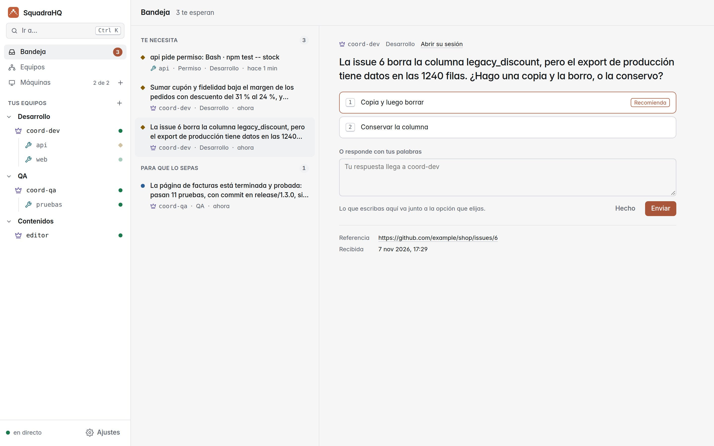
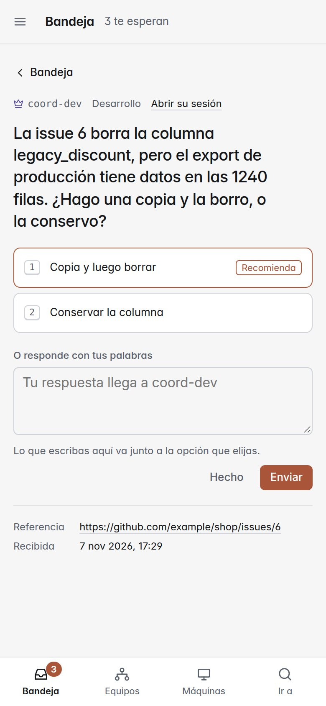
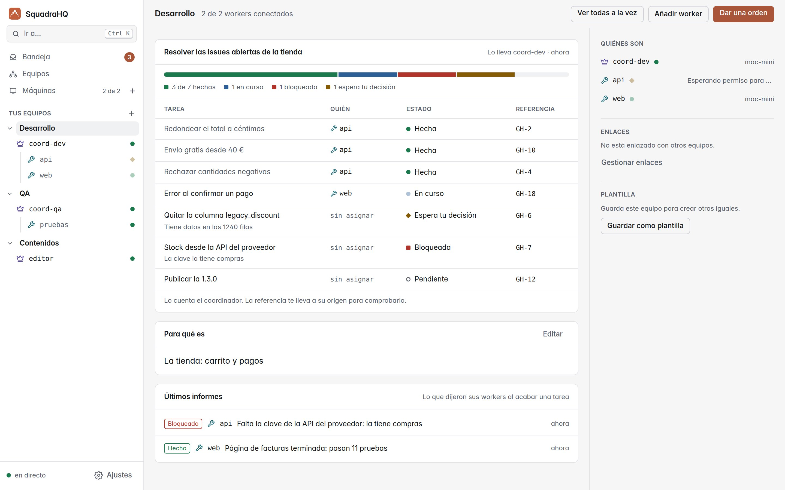
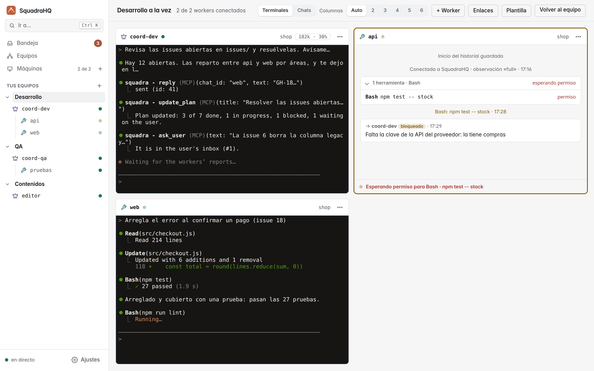

NuevoUna bandeja para tus decisiones, y un plan para cada equipo
Tus agentes de Claude Code, trabajando en equipo.
Un coordinador reparte el trabajo entre sus workers, en cualquiera de tus máquinas, y aprueba lo que es seguro. Lo que te toca decidir te espera en la bandeja, así que puedes estar en otra parte.
Código abierto, MIT. Autoalojado: un servidor Node.js, sin dependencias.

La bandeja
Solo lo que te toca decidir.
Los coordinadores te dejan una pregunta por decisión, con sus opciones y lo que recomiendan. Todo lo demás lo resuelven ellos, y mientras esperan siguen con lo suyo.
- Responde con un toque. Elige una opción y añade un detalle si quieres, desde tu mesa o desde el móvil.
- Nunca con información vieja. Si un coordinador descubre algo nuevo, actualiza la pregunta y ves que ha cambiado.
- También los permisos. Un worker que espera para ejecutar un comando aparece aquí, con lo que quiere ejecutar exactamente.

Equipos
Cada equipo, con su plan a la vista.
Un equipo es un coordinador y sus workers, cada uno en su repositorio y con su persona. El coordinador mantiene su plan al día: qué está hecho, qué está en curso, qué está bloqueado y qué espera tu decisión.
- Cuánto le falta, de un vistazo. Cada tarea con quién la tiene, su estado y de dónde viene.
- Equipos enlazados. Diseño y marketing, por ejemplo, se pasan trabajo a través de sus coordinadores.
- Plantillas. Guarda un equipo y vuelve a abrirlo igual, en cualquier máquina, de una vez.

En directo
Míralos a todos a la vez.
Cada agente es una sesión normal e interactiva de Claude Code: ves su conversación, sus herramientas y su terminal en directo, y puedes entrar a escribir cuando quieras.

Todo lo demás
Hecho para dejarlo trabajando.
Todas tus máquinas
Cada agente funciona en cualquier ordenador que añadas, con la sesión de Claude Code de ese ordenador. Las máquinas se conectan hacia fuera: sin puertos abiertos.
Seguro de serie
El coordinador solo aprueba lo que no tiene efectos; lo destructivo, irreversible o con coste te llega antes a ti.
Ctrl+K desde cualquier sitio
Ve a cualquier sesión, equipo o decisión, o abre una acción, con el teclado.
Empresas y personas
Varias empresas en un mismo servidor, cada una aparte; cuentas con códigos y un rol para cada persona.
Tus propias skills
Da a cada agente una skill o un agente de su proyecto como persona: diseño, marketing, revisión de código…
Autoalojado
Un servidor Node.js o una imagen de Docker, con HTTPS automático cuando le das un dominio. Licencia MIT.
Empezar
En marcha en tres pasos.
Arranca el panel
En cualquier ordenador con Node.js 22, o con Docker. La primera vez, su token te convierte en propietario.
Añade tus máquinas
Máquinas → Añadir máquina te da un comando para ejecutar en cada ordenador donde trabajarán los agentes.
Abre un equipo
Nuevo equipo: para qué es, quiénes lo forman y dónde trabaja. Después dale a su coordinador la primera orden.
git clone https://github.com/roke22/Squadra.git squadra && cd squadra
git checkout "$(git tag --sort=-v:refname | head -1)" # la última versión
node server/server.js # http://127.0.0.1:7787Docker, HTTPS en un dominio y todo lo demás: el README y la referencia.
Comparado
Más que una terminal.
| Qué | Subagentes de Claude Code | Agent Teams de Claude Code | SquadraHQ |
|---|---|---|---|
| Los agentes trabajan en | la misma sesión | la misma máquina | cualquier máquina que añadas, cada una con su sesión |
| Los sigues | en una terminal | en una terminal cada uno | en un panel en directo, desde cualquier navegador o móvil |
| Tus decisiones | te las pregunta en la terminal | te las pregunta en la terminal | en tu bandeja, una por decisión, con opciones |
| Trabajo desatendido | apruebas cada permiso | apruebas cada permiso | el coordinador aprueba lo seguro |
| Varios repositorios | no | la carpeta del líder | un worker por repositorio, donde está |
Qué necesitas